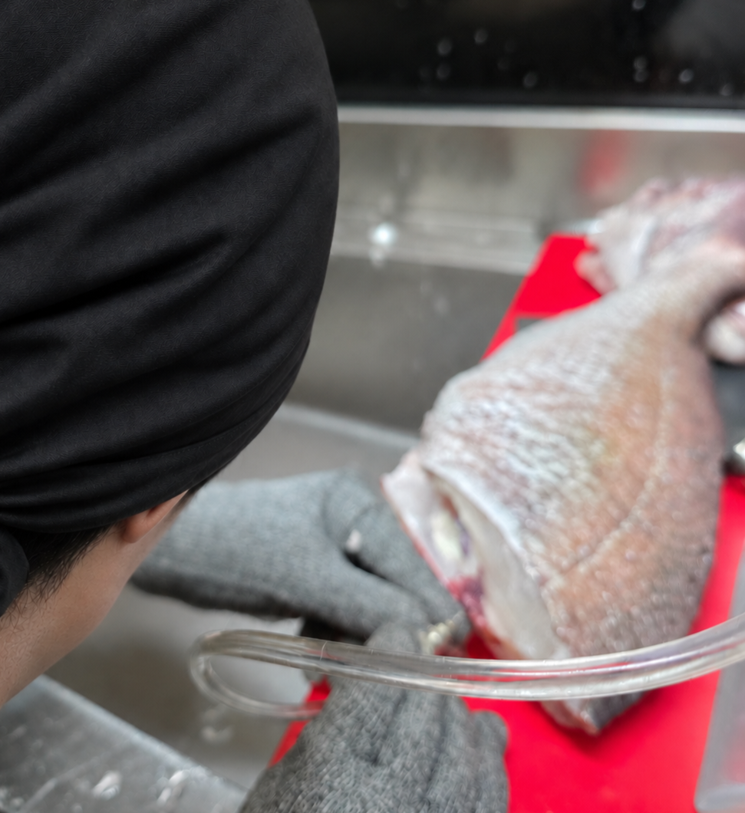

선도마루 개발 이야기
원물의 가치를 높이다
매장에서 시작된 고민이 선도마루가 되기까지.
활어 전처리 현장에서 사용하는 체내 주입형 제품.

BLACK PRO · 실제 사용 현장 사진
손님이 많으면 회전이 빨라 늘 신선한 회를 제공할 수 있는데,
냉장고에 머무는 시간이 길어질수록 선도는 급격히 떨어집니다.
손님상에 내놓기 찜찜해지면 결국 버릴 수밖에 없습니다.
그렇게 비싼 횟감을 버린 게 한두 번이 아닙니다.

썬 회는 다시 못 팝니다. 노쇼 한 번에 그날 장사를 다 날립니다.
○○횟집 · 김○○ 사장님
수조는 꽉 찼는데, 가게는 텅 비었습니다. 많이 사면 남을까 걱정, 적게 사면 부족할까 걱정입니다.
○○활어전문점 · 박○○ 사장님
생선값만 버리는 게 아닙니다. 새벽 시간도, 칼질한 손도 같이 버려집니다.
○○수산물가공업체 · 최○○ 대표님
애매하면 못 냅니다. 생선 한 마리 아끼다 단골을 잃습니다.
○○일식집 · 이○○ 사장님
선도마루 개발 이야기
매장에서 시작된 고민이 선도마루가 되기까지.
고민의 시작
장사가 안되는 날에는 생선이 남습니다.
팔아보지도 못하고 버릴 때면 마음이 아팠습니다.
방법을 찾다
남은 생선의 선도를 지킬 방법을 찾았습니다.
여러 방법을 시도하다 원료를 배합하기 시작했습니다.
개발의 계기
직접 만든 배합액을 생선에 뿌려두었습니다.
며칠 뒤 다시 꺼내 본 일을 계기로 배합을 살펴봤습니다.
3년간의 현장 사용
다양한 원료를 써보고 배합을 바꿨습니다.
매장에서 직접 사용하며 3년 동안 고쳤습니다.
선도마루의 탄생
아는 사람들에게 써보라고 권했습니다.
지인들의 추천과 판매 권유로 선도마루를 출시했습니다.
블랙 프로는 활어의 전처리를 위해 체내에 주입하여 사용하는 수산물 전용 소스입니다.
활어 전처리에서 체내 주입 공정까지 진행하는 전문가를 위해 개발했기에 ‘PRO’라는 이름을 붙였습니다.
실제 사용 현장 사진
활어 전처리 과정에서 체내에 주입하는 전문가용 수산물 전용 소스입니다.
체내 주입 공정에 익숙한 전문가용 제품이므로 작업 순서는 생략했습니다. 사용 전 최종 제품 라벨과 관련 위생·안전 기준을 확인해 주세요.
수산물 식당을 운영하며 재료 관리가 늘 고민이었습니다. 현장에서 직접 필요해서 만들고 3년 넘게 사용하며 배합을 다듬었습니다.
연말 대목이 지나고 1월에 남은 재료를 확인한 일을 계기로 공식 검사기관에 시험을 의뢰했고, 이후 제품 출시를 준비했습니다.
시험 결과 수치, 효능 및 특허 등록 여부는 관련 증빙 확인 전까지 광고 문구에 사용하지 않습니다.
위 내용은 제공된 라벨의 안내·주의사항을 정리한 것입니다. 실제 사용 시 제품 최종 표시사항을 확인하세요.
취급하는 수산물도, 작업 방식도 업장마다 다릅니다.
셰프님과 업장 대표님이 각자의 경험을 바탕으로 다양한 활용 방법을 찾아가시길 바랍니다. 새로운 방식은 제품에 표시된 용도와 안전 기준에 맞는지 먼저 확인해 주세요.
기존에 사용하던 재료의 전처리 과정에 어떻게 적용하면 좋을지 궁금하다면 게시판으로 문의해 주세요.
어종과 작업 방식, 현재 공정을 알려주시면 현장에서 쌓은 경험과 확인된 제품 정보를 바탕으로 함께 고민하고 구체적으로 답변드리겠습니다.
문의 내용을 확인한 뒤 가능한 한 빠르게 답변드리겠습니다.
문의 시 어종 · 작업 방식 · 궁금한 점을 남겨주세요.
현장에서 시작된 고민에서
선도마루가 나왔습니다.